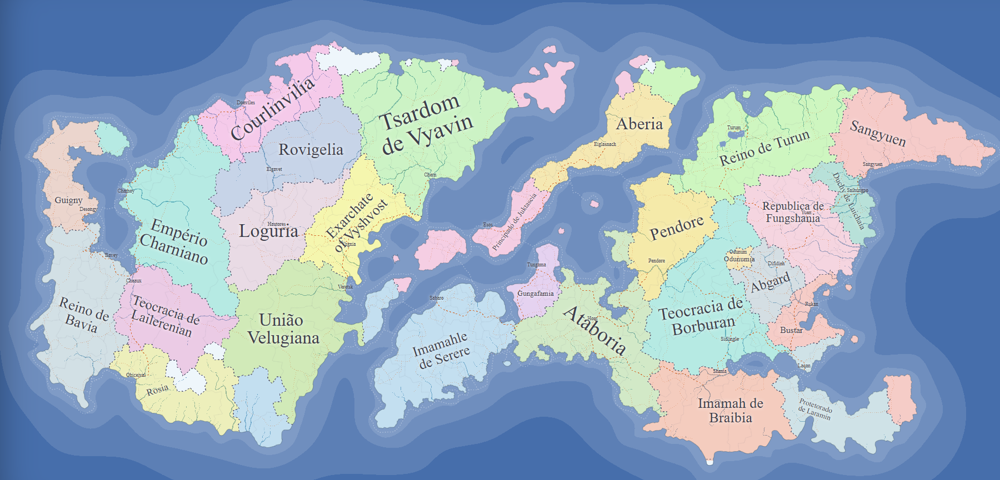
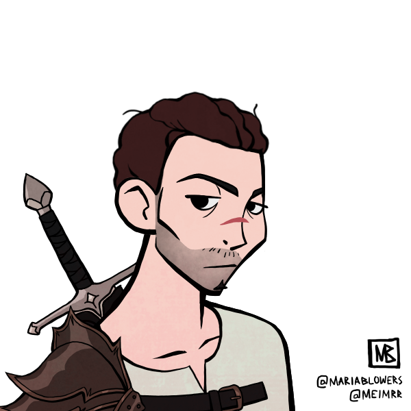
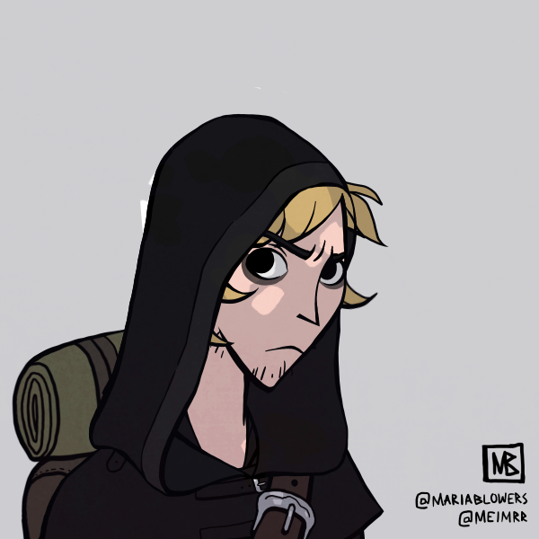
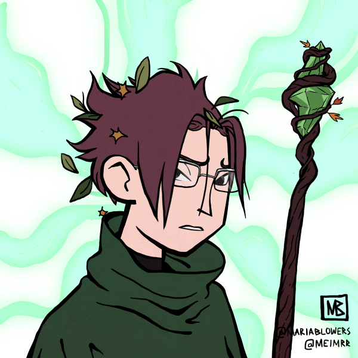

Mundo de SdV

História
Há 167 anos, o Império Charniano e a Teocracia de Lailerenian formaram uma aliança. Ambos os reinos vinham de lideranças problemáticas, o que acabou preocupando o pequeno reino de Rosia. Embora grande, Rosia não se comparava aos seus vizinhos: era um amontoado de terras agrícolas sem um grande exército, já que em toda a sua história nunca haviam entrado em guerra.
Porém, seus vastos campos e minerais preciosos despertavam o interesse do mundo inteiro. Era questão de tempo até serem invadidos. Como mecanismo de defesa, Rosia construiu muros enormes e seu mago mais forte (Sauruan) disparou inúmeras bolas de fogo contra seus oponentes. Assim a guerra estourou; a destruição e a miséria fortaleceram a magia sombria, emergindo o mundo em trevas...
Personagens
Sisifo: Guerreiro impetuoso com a força de 10 homens, é um berserker especialista em combate corpo a corpo.

Raskol: Jovem criado nos subúrbios e conhecido como "Mãos de Pena". É um ladino habilidoso, embora pouco carismático.

Asmode: Aspirante a mago nascido em Lailerenian (onde a magia é proibida). Fugiu para Rosia para praticar seu ocultismo.

Sistema
Regras Principais
Mecânica de Testes: Role 1d20 + Atributo Relacionado.
Dificuldade Padrão (CD): Fácil (10), Média (15), Difícil (20).
Combate em 3 Passos
1. Iniciativa: 1d20 + AGI (maior valor age primeiro).
2. Ataque: 1d20 + FOR (ou AGI para armas leves).
A Defesa do alvo é fixa: 10 + AGI.
3. Dano:
- Espada: 1d8 + Força
- Adaga: 1d6 + Agilidade
- Magia: 1d10 + Mente (Custa 2 PMs)